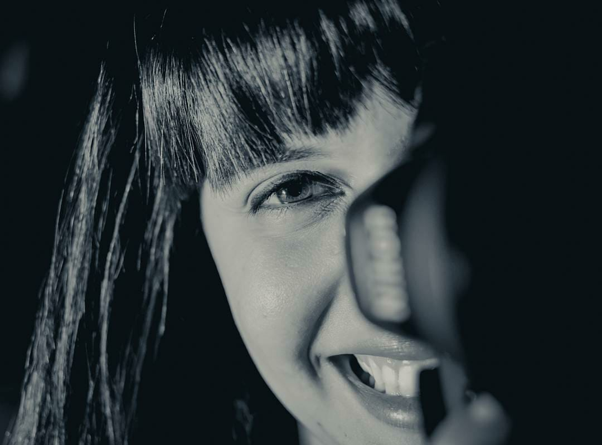

Sobre Mim
Fotógrafa há 10 anos, me dediquei inteiramente a fotografar momentos únicos da vida, os nascimentos.
Ao longo da minha trajetória, decidi me especializar. Me formei em Fotografia pela Universidade de São Paulo (USP) e conclui cursos importantes para a construção da minha carreira, como no Instituto Internacional de Fotografia (IIF), por Danilo Russo; Marketing para Fotógrafos Road Map, por Silvia Martins; Newborn, com Stephanie Robin; e Danielle Hamilton.
Além de registrar nascimentos nas principais maternidades de São Paulo, Eu foco meu trabalho também em ensaios de casamentos e sensual feminino (boudoir). Sessões fotográficas como book de boudoir, casamento e newborn (recém-nascidos) tornaram-se um diferencial, minha essência na fotografia.
E não para por aí, eu adoro acompanhar os bebês que passaram por minhas lentes desde o nascimento, fotografando mês a mês cada detalhe do crescimento até os seus aniversários.